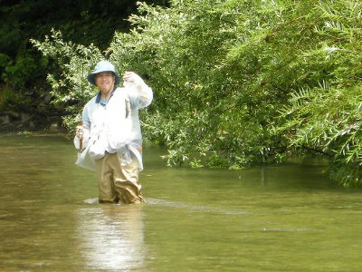
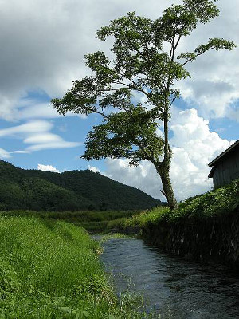

釣行日誌 故郷編
2009/8/8 午後の雷鳴
今日は、キウィスタイルにて突撃である。キウィというのは、ニュージーランド原産の飛べない野鳥であるが、ニュージーランドの人々も、自分たちのことを「キウィ」と呼ぶのである。釣りで言うところのキウィスタイルというのは、夏場の時期に、ウェーダーを履かずに、アクリルのタイツと水切れのいい生地でできたショーツだけで釣りをする格好をこう呼んでいる。
足回りは決まったので、上にはお気に入りの exofficio 製の、自分で緑色に染めたシャツを着る。これで支度は完ぺきである。シャツで魚が釣れれば世話は無いが。
今日も今日とて叔父と高原の川を目指す。国道の橋を渡りながら川を見ると、先日の雨で今日も増水である。合流点では、河原の葦が出水でなぎ倒されて軒並み横倒しになっている。流れは速く、今日も釣り下りの方が分がありそうだった。
合流点の橋詰めに車を停め、心ワクワクしながら身支度を整え、いそいそと叔父の前にたって田んぼ脇の小径を河原へと降りてゆく。今日も叔父は私を先行させてくれるらしい。叔父がこのあいだ型の良い岩魚を三つ釣ったという合流点上の深みから釣り始めることにした。
今朝は迷わずフローティングミノーを取り出して、初期の老眼に苦しみながらラインを結んでいると、叔父が、
「今日はミノーか？」
と、笑いながら問いかけた。これまでスプーンかスピナー一点張りで釣りをしてきたのだが、これまでの叔父の釣果を考えると、ミノーを使わざるを得ない気分になってしまっているのだ。
上流側から深みのおしまいあたりに黒金のミノーを投げ込んで、アクションを付けながらごくゆっくりと引いてくる。二度、三度。しかし出ない。叔父がやって来て、ロッドティップを対岸の草の繁みに被せるようにして岸ぎりぎりを引いてくると、ググッと叔父のロッドが曲がり、今日の最初の岩魚を叔父が釣り上げた。
『ぐぐ。またやられたか！』
今日も最初の一本を先に越されてしまった。気を取り直してどんどんとポイントを攻めながら下流へ向かう。合流点では流れのぶつかるあたりに長い深みが出来ており、ススキの根が密集したエグレには、いかにも岩魚が潜んで居そうだった。ぶつかった流れが平常のスムーズな流れに整うあたりにルアーを投げ込み、ススキの根っこ沿いをリーリングしてくると、コツンとアタリがあった。それっ！と合わせると、小さいながらも今日の初物が上がってきた。岩魚である。
気分を良くしてさらに釣り下ろうかと思って下流を見渡すと、ちょうど餌釣りの人が水辺に降りるところが見えた。
「叔父さん、下流に釣り人がいるよ」
「お、そうか。じゃぁ場所を変えよう」
急遽、作戦の変更を迫られ、二人して増水した川を上流へと遡行する。速い流れが両足に重くのしかかり、帰りはしんどい道のりとなった。
車に戻り、このあいだ良い思いをしたさらに上流を目指して行って見ると、手頃な空き地があり、名古屋ナンバーの車が一台停まっている。車を降りて様子を見ると、小さな橋のたもとに小径があって河原へ降りられるようになっている。その上流には、フライの釣り人が二人、何か話し込みながら毛針を水面に打ち込んでいる。
「あの人達は、ここから上流に行くから、私らは下流へ釣り下ろう」
と言うと、叔父も同意し、かなり増水している最上流域のこの区間を釣り下ることにした。小さな橋の下は、わずかな深みになっており、水中には石がゴロゴロしている。蜘蛛の巣がまだ張られていたので、今朝は誰もここをやっていないなと思いつつ、ミノーを投げる。ゴロタ石をかすめて泳いできたミノーが水面に引き上げられる直前、まぁまぁのサイズの岩魚が水面から半身を乗りだして食い付いてきた。
「おっ！ 居る居る！」
ミノーを喰いきれずに水中に戻った岩魚が、もう一度出るかなと思って再びルアーを引くと、水の中で茶色の影が反転した。
「くぅー！ また喰いきれんかったか！」
もう一度！と思ってキャストすると、今度はゆらゆらとミノーを追いかけてきて、私の姿を見つけて流れの中に帰って行った。むーん、残念。と思ったが、下流にも魅力的なポイントがいくつも見えたのでそちらに足を進めた。
瀬の中のほんの小さな弛みにミノーを流すと、小石の陰から岩魚が飛び出てヒットした。今日の二匹目である。ようしこれで調子が出たぞと思い、護床ブロック積みの堰堤に出来た深みを攻めていると、下流から餌釣り師二人が不意に登場した。
「ありゃりゃ。ここにも人が居たか」
仕方なく上流へ引き返し、叔父を促して再度ポイントを変えることにする。釣り下っていると、下から登ってくる先行者を早く見つけて作戦を立て直せるのがダウンストリームの釣りの利点と言えば利点である。
今度は車で先回叔父が初老の餌釣り師と出会った付近の上流から入渓することにして車を回す。河原に降りた最初の淵でまずまずの岩魚を一匹釣った。やはりミノーはよく効くなぁと感心する。と、南西の空が急に薄暗くなり、やがて灰色の雲がずんずんと近づいてきて、いきなり雨が降り出した。今日は雨具を車に置いてきてしまったので、このまま釣り続けるしかない。叔父はベルトポーチからコンビニで売っているようなビニールの雨具を出して着込んでいる。コロンビアのフィッシングハットは晴れた日にはまことに快適だが、防水性はまったく無いので雨粒をまともに頭頂部に感じる。これはアタマの毛が薄くなってきたせいもあるのだろうか？
雨脚はどんどんと強くなって来て、シャツもかなり濡れてしまった。気温はそう低くないのだが、それでも高原の空気は涼しく、肩から二の腕あたりが濡れて冷たい。だらだらと続く平瀬が堰堤まで続いており、左岸側は灌木の繁みになっているポイントに来た。一応一通り攻めて見て、どうも反応が無いので先に堰堤下の落ち込みを狙っていると、後から来た叔父が、しつこくゆっくりとしたトウィッチを入れながら藪沿いを攻めている。すると、叔父の竿が二度、三度と曲がり、見る間に三匹の岩魚を釣り上げてしまった。いつもながら叔父の粘りには感心させられる。

堰堤には農業用水の取水口があり、細い水路がそこから下流に向かって延びている。ぽんぽんとリズム良く釣って気を良くしてやって来た叔父は、幅40cmほどのその水路の中にミノーを投げ込み、クィックィッと引っ張っている。
『いくら何でもそこでは.....』
と思って見ていると、いきなりロッドがしなり、型の良い岩魚が引きずり出された。暗ぼったい用水の中に居たので、黒い色をした岩魚だった。25cmほどはあっただろうか。
用水の中を歩きながら下ってゆくと、上から木の枝が密集して覆い被さっている長い廊下みたいなポイントに来た。雨にも負けズにキャストを続けていると、対岸の灌木の根っこからアベレージサイズが次々と出てきた。釣っては放し釣っては放しである。今日も岩魚たちは喰い気立っているらしい。
そうこうしているうちに雨が上がり、再び雲間から日が差してきた。この間叔父が爆釣したポイントにやって来たので、二匹目のドジョウを狙ってミノーを投げてみた。かなり増水してポイントの形状が大きく様変わりしていたが、草の陰からアベレージよりもちょっとだけ大きな岩魚が出てくれた。しかし、前回叔父が爆釣したほどには数も大きさも及ばず、少々期待が外れてしまった。
前回の入渓点である丸木橋のポイントまで来てみると、橋は増水で流されて右岸へと打ち寄せられていた。ワイヤーで結わえてあるので、かろうじて流失は免れたらしい。そこには国道へ上がる小径が付いているので、叔父を待って国道に上がり、ヨタヨタと歩きつつ車に戻った。雨が降っていたとは言え、車の中は蒸し暑く、窓を開け放してお弁当にした。ダイエットのためにコンビニのお握り二つと野菜ジュースという私のメニューは相変わらずである。
お腹も一杯になったので、こんどはさっきの丸木橋のポイントから再び釣り下ることにした。またも堰堤があり、用水が引かれている。叔父は再び用水路の中を攻めている。（笑）
堰堤下の深みでは何の反応も無かったが、私が見落として通り過ぎた、右岸側の小さな繁みの下で、叔父がまたしても二匹の岩魚を引きずり出した。
「うーん、やっぱりちょっとでも怪しいところは攻めて見ないとダメだねぇ」
私がそう言うと、叔父は無言でうなずいた。堰堤から直接下流には降りられなかったので、右岸を高巻きして下流へ行ってみると、50mほど下流にフライマンの姿が見えた。これも仕方がないので、叔父に堰堤横の繁みを突っ切って国道に出て、車で別のポイントを探すことにしようと提案すると、すぐ目の前に小さな藪がかぶさった深みを叔父が見つけ、そこをやってみろと言う。叔父の言うとおりにミノーを引いてみると、パクッと岩魚が食い付いた。
「どうだ、これが渓流釣りだぞ」
叔父のポイントを見つける眼力にはまたしても感心させられた。私も一匹釣れたので、気を良くして、
「叔父さん、あそこの支流へ行ってみようか？」
と、再度提案すると、
「おおいいよ。今日はもうだいぶ釣ったしなぁ」
と答えた。余裕ある叔父の横顔を見つつ車を今日最初の合流点の少し上にある小さな支流へ向けた。この支流は、もう30年も前に、私の父や兄がよく足を運んでいた沢なのだ。普段は渇水であまり釣れそうもない流れだが、今日みたいに水の大きな日には、けっこう釣れるというのがその昔の父の見解であった。しばらく上下流を車で偵察した後に、とある堰堤下の土手から簡単に水辺に降りられそうだったので、そこの空き地に車を停め、二人で降りていった。

降りた最初のポイントは、大きな立木を下流に眺める景色の良い場所で、平瀬がだらだらと続いている。水際から土手になっており、茂った草がどことなく懐かしいニュージーランドのスプリングクリークを思い起こさせた。
一見何の変哲もない流れであったが、ミノーを流しつつ下流へ送り込んで、少しアクションを付けて引いてくると、次から次へとアベレージサイズの岩魚がヒットした。叔父が上流の堰堤を攻めている間に、同じポイントで六匹が食い付いた。釣っては放しを繰り返していると、叔父が上流から戻ってきて、
「どうだ？ 調子は」
と聞いたので、
「サイズはともかくヘーチョンベー（アブラハヤの地方名）みたいに釣れるよ」
と答えた。事実、子供の頃、釣りを覚えた田舎の渓流では、アブラハヤがミミズの餌でいくらでも同じポイントで釣れたのである。
「そりゃ調子がいいな」
という叔父の言葉を聞きつつ、私が先に立ってさらに下流へ降りてゆく。護岸の間の葦が増水でなぎ倒されているので歩くのは楽であったが、平常時のこの沢はとても釣りにくいだろうなと想像された。
右にカーブしている葦の弛みで、竿先にコツンと反応が有ったので、しめしめとほくそ笑みつつ、秘技、岡田君のハンドル逆転送り込みを繰り出して攻めて見た。流れに乗ってアクションを見せるミノーが葦のエグレに入った辺りでググッと来た。思い切って合わせてからリールを巻いてくると、これもアベレージサイズの岩魚であった。しかし、ここぞというポイントで釣ったので気分が良かった。などと気を良くしていると、突然あたりが暗くなり、すぐ近くで雷鳴が聞こえた。
『うわ！ これはいかんな...』
と思って叔父の方を振り返ると、今度は稲光に続いてあっという間に大きな雷鳴が轟いた。叔父はもうスタスタと農道に上がって車に戻ろうとしている。大きな雨粒が次々と落ちてくる。ロッド、リール、ベストと、これだけ金属類を身に付けていれば、落雷直撃のネタには事欠かないだろうと急に怖くなり、ミノーを巻き取るのもそこそこに土手を駆けずり上がった。すると、三度目の稲光と間髪を入れぬ雷鳴。機銃掃射を浴びるのはこんな気分かと首をかがめながら叔父を追い越して、必死で車に駆け戻る。叔父が来るまでの時間がとても長く感じられた。叔父が戻り、急いでドアを開け、釣り具を放り込んでから座席に飛び乗る。なんとか生き延びたようだ。それにしても高原の天気は変わりやすく、雷だけは勘弁して欲しいと心から思った。何を隠そう、私は子供の頃から雷ほど怖いものは無いのである。
とりあえず車の中なら安心と言うことで、ウェーダーを履いたまま叔父が運転を始め、高原を降りてゆくことにした。下の町まで来ると、雷鳴も雨も止み、国道脇の空き地に車を停め、二人して安堵のため息をつきながら服を着替えた。帰途、いつも入漁券を買うドライブイン下を見てみると、今日もルアーマン二人がバックウォーターの大物を狙って特大のルアーを投げているのが見えた。
「やってるやってる」
叔父と微笑みつつその光景を一瞥し、いつもの長い国道のドライブで帰宅した。帰りのファミレスで食べた海鮮丼がとてもおいしく感じられた。落雷に打たれないで、本当に良かったと、心から安堵した八月の夕暮れであった。
釣行日誌 故郷編 目次へ
ホームへ
ホームへ
????????